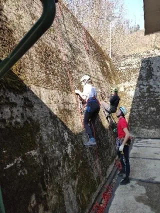

2. izlet speleološke škole SOV
Školica napreduje punom parom. Drugi vikend je za nama, a odnio nas je sa Žice pravo na Gorsko zrcalo

Napisala: Clea Tunjić
Foto: Pava, Dalibor, Karmen, Nikola
Jedva smo dočekali početak škole i evo, drugi vikend je već tu! 26.03. i 27.03. bili smo na našem domaćem terenu - Medvednici. Prvi dan na „Žici“, starom prostoru Zagrebačke žičare, a drugi dan na Gorskom zrcalu, na istočnoj strani. Subota, sastanak u ranim jutarnjim satima na Žici. Kada smo se svi okupili Pava nas je podijelila u dvije grupe koje su se izmjenjivale: za prvu pomoć i za kretanje po užetu. Svaki školarac dobio je 2 instruktora, nema šanse da ne naučimo. Grupa koja je išla na kretanje po užetu imala je 2 smjera vani uz zid, silazak u „jamu“, prečnicu i nekoliko linija za prelazak preko uzla. U početku je bilo teško vjerovati spravicama i opustiti se, te zapamtiti sva imena, ali što je vrijeme prolazilo to smo bili sve opušteniji. Kroz cijeli dan podrška nije dolazila samo od instruktora nego i od naših četveronožnih prijatelja kojih je bilo u velikom broju.😊
Umjesto na zagrebačkoj Špici, subotu provodimo na Žici
Drugu grupu su instruktorice/doktorice Dora i Sanda učile prvu pomoć na lutki i na dobrovoljcima iz grupe. Sve smo prošli od početka: AVPU, imobilizacija, zaustavljanje krvarenja… Zapravo sve ono što nam je potrebno u slučaju nezgode u speleološkim objektima, ali i šire.
Kada smo svi prošli i prvu pomoć i kretanje po užetu, došlo je vrijeme postavljanja spiteva i fikseva u kamen bušilicom, spiterom i kladivom, a za to je bio zadužen naš instruktor Ličko, koji nam je sve detaljno pokazao.
Sve je išlo glatko dok nije došlo do provjeravanja i spremanja opreme… Definitivno ćemo svi pamtiti famozni karabiner koji je falio i radi kojega smo više puta vadili i spremali opremu u transporterke. Pronađen je!
Drugi dan započeo je zabavno od ranog jutra jer se tu noć sat pomicao unaprijed. Većina je bila neispavana, neki su zaspali, a neki su se pak prerano digli jer su sami išli pomicati sat dvostruko. Svakakvih slučajeva je bilo no, bilo kako bilo, svi smo se na kraju skupili u nekom trenutku. Išli smo na stijenu Gorsko zrcalo visoku oko 30 metara ponoviti jučerašnje gradivo kretanja po užetu sa prelaskom sidrišta, a dok se čekao svoj red, ponavljali smo uzlove i učili kako se pregledava tj. preparira i slaže užad. I danas smo bili blagoslovljeni individualno sa instruktorom. Sve je išlo glatko u penjanju gore, no prelazak preko ruba za silazak je nekima stvarao problemčiće. Nakon zanimljivog dana slijedio je roštilj! 😊 Bilo je svega, fine hrane, pijače, ugodnog društva i vatrice... Tako smo lijepo s punim želucima, nasmijanim licima ali i novim iskustvima, završili naš još jedan izlet. 😊
Nedjeljno jutro na Gorskom zrcalu